Купить фильтр
стоимостью 215 000 тенге всего за
15 000 тенге! до конца акции осталосьrs-106r-p
PurePro® ROYAL RO Systems
проверка воды на примеси
вода из под крана
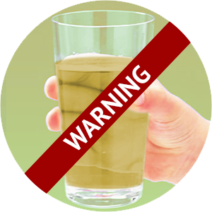201 - ... (опасно)
вода с фильтра purepro
5 -40 (идеально)
Таблица показаний воды
TDS-метром
-
5-40
идеально -
41-60
хорошо -
61-100
удовлетворительно -
101-200
неудовлетворительно -
201-...
опасно
Наши гарантии
Гарантия
1 год гарантии на Осмос системы с насосом для повышения давления. Внимание! Гарантия не распространяется на механические повреждения.Сервис
Бесплатный сервис на все модели фильтров.Выезд мастера бесплатно в течение всего срока эксплуатации. Работа мастера после истечения срока гарантии оценивается от сложности работы.
Мы будем делать все необходимое для того, чтобы Вы были довольны нашим сервисом.наши сертификаты
7причин
установить фильтр PurePro
-
Эталон качества и надежности
-
Бесплатная установка
-
Соответствие высоким стандартам США
-

Минерализация очищенной воды Чисто и полезно
-
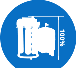
Компактные размеры
-
Вся продукция прошла аттестацию FDA
-
Возможность покупки в рассрочку
Как мы работаем
-
Онлайн заказ
-

Доставка и оплата
-
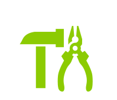
Установка
вАЖНО ЗНАТЬ КАЖДОМУ
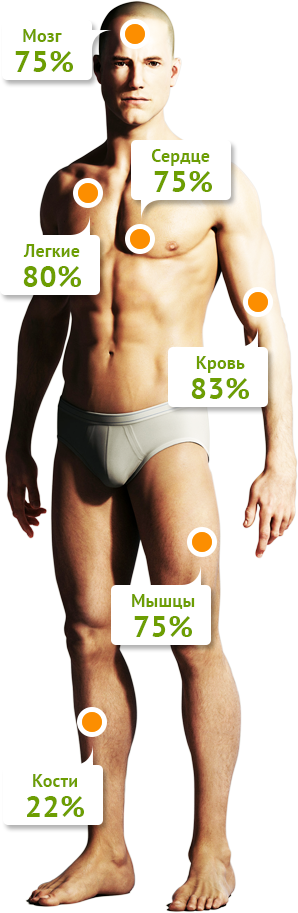Откуда берется вода
- 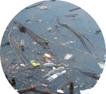
- 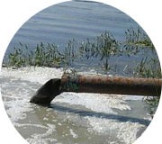
Основными источниками воды в городах служат ближайшие реки и озера
На водоочистительной станции в воду добаляют хлор
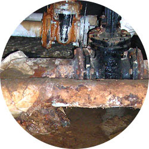...затем она проходит по 50-летним трубам, и даже в новые дома попадает с примесями, которые собрала внитри них. Это могут быть бактерии, плесень, ртуть, известь, свинец и другие опасные загрязнения.
Отзывы наших клиентов
-
Мария, 25 июля 2014 год
Претензий по качеству воды нет. Вода стала вкуснее, перестала образовываться накипь в чайнике. Установщики сработали быстро и качественно.
-
Иван, 20 июля 2014 год
После установки фильтра, вода приобрела новый вкус и цвет. Исчезла горечь и неприятный запах. В чайнике перестала появляться накипь. Я считаю что этот фильтр стоит своих денег.
-
Мария, 25 июля 2014 год
Претензий по качеству воды нет. Вода стала вкуснее, перестала образовываться накипь в чайнике. Установщики сработали быстро и качественно.
-
Иван, 20 июля 2014 год
После установки фильтра, вода приобрела новый вкус и цвет. Исчезла горечь и неприятный запах. В чайнике перестала появляться накипь. Я считаю что этот фильтр стоит своих денег.
Как мы работаем
1Как долго проходит установка фильтра для очистки воды?
Ответ:В зависимости от квалификации установщика, процесс установки фильтра Pure Pro может дляться от 30 минут (высоко квалифицированный специолист) до бесконечности (если руки не из того места растут)
2Как часто надо менять катриджи?
Ответ:В зависимости от степени загрязненности воды, время работы картриджа может быть от бесконечности (в идеальных условиях) до пяти минут (при наличии в воде вязких и жирных примесей в количестве свыше 70 процентов)
3Есть ли срок годности у фильтра PurePro?
Ответ:В зависимости от условий эксплуатации срок годности может варьиооваться от 3 секунд (при жесткой обработке кувалдой), до бесконечности (при нераспечатанной упаквке, в специально выделеном помещении с постоянными и прием лемыми влажностью и температурой воздуха.)
С ФИЛЬТРОМ PUREPRO ВЫ НАВСЕГДА ЗАБУДЕТЕ О:
-
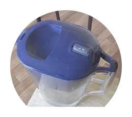
Постоянной доливке в кувшин очиститель
-
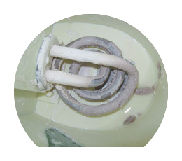
Накипи в чайнике
-
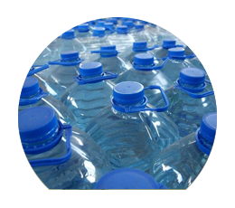
5-литровых бутылках из магазина
-
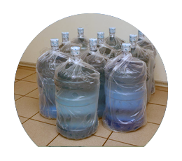
Сменных 19-литровых бутелях
-
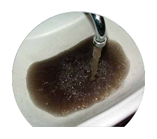
Неприятном запахе и вкусе воды из под крана
Наши контакты
Головной офис компании Pure Pro по Казахстану в г. Астана:
"FAVORIT New Technology" Адрес:проспект Абылайхана, 16/1 ВП-1
Телефон:+7 (7172) 478066;
Номер мобильного телефона:+7 (702) 4784727
E-mailinfo@pure-pro.kz